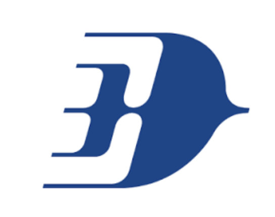

- UK Atomic Energy Authority (UKAEA) FOSTER Programme.
- Developed a conceptual water-cooling system for a future gyrotron test facility, defining thermal requirements and evaluating cooling strategies.
- Developed a Python thermal-hydraulics tool for component sizing, pressure-drop analysis and finite-volume modelling of coolant temperature.
- Performed sensitivity analysis on key design parameters and developed the Process Flow Diagram and preliminary system layout.
Internships
MuWaveCooling Loop Design Intern
Amazon Web ServicesData Centre Engineering Operations Intern
- Developed an interactive HTML/CSS internal web tool to improve engineer access to complex mechanical and electrical system information.
- Supported preventive maintenance and root-cause analysis of critical mechanical and electrical infrastructure, including chillers, cooling towers, pumps, CRAHs, generators, UPS/PDUs, transformers, switchgear and circuit breakers.
- Analysed HVAC, BMS and EPMS performance data to evaluate cooling demand, system performance and reliability in a high-availability data centre environment.

Malaysia AirlinesEngineering Intern
- Interpreted aircraft maintenance manuals and technical documentation to identify procedures, tooling and components required for Rolls-Royce Trent LP compressor fan blade removal.
- Assisted with Airbus A330 maintenance activities, including cargo fire-extinguisher servicing, avionics isolation and associated circuit-breaker procedures.
- Participated in maintenance of aircraft hydraulic, propulsion and electrical systems, including brake accumulators, engine removal and Integrated Drive Generator (IDG) installation.